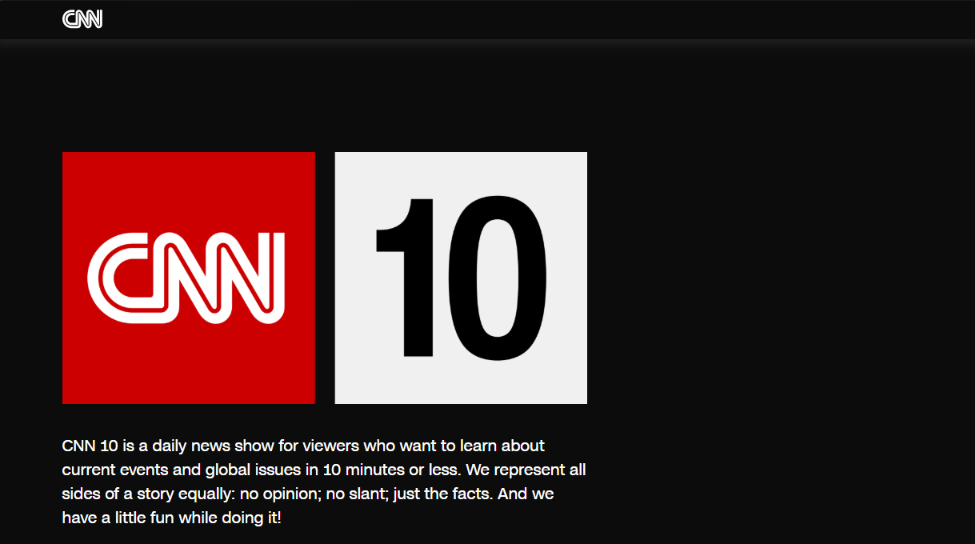
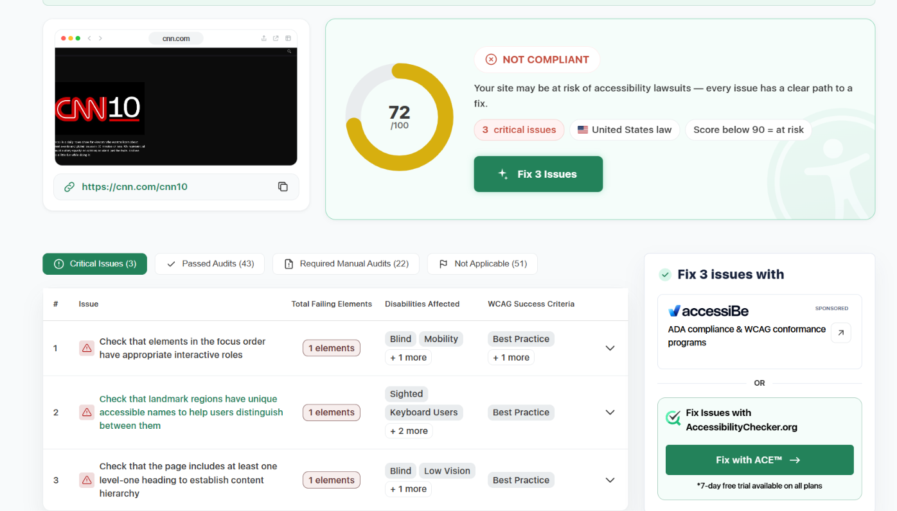

Name and Websites URL

The website we are going to be evaulating is CNN 10 .....YAY!! Here is it's Url: Visit https://www.cnn10.com
Target Audience
When creating a website you try to target age various of people, so they can be interested in your website. CNN 10 core audience is primarily U.S.based viewers aged 18-34 who are interested in short, educational, and fact based news content, with a strong appeal to politically engaged and tech savvy consumers.
Site Organization
The way CNN 10 is organized is that it has clear sections for episodes, host info, transcripts, and related content, all accessible from a simple homepage. The site has header and navigation, content categories, Navigation & Access. The purpose of this type of structutre they have designed is for quick access to daily content and educational use.
CRAP Design Principle
CNN 10 website likely uses the CRAP principles which is Contrast, Repetition, Alignment, and Proximity to create a clear, consistent, and accessible user experience that aligns with its brand and web standards. One of the principles that is an example of crap would be Contrast due to the fact CNN 10 ite uses bold headlines, high contrast text colors, and distinctive call to action buttons to make key stories and navigation elements stand out.
Accessibility Audit Score

When using accessibility checker the score that it showed was 72/100 meaning the site is at accessibility to get sued. It has 3 critical issues which are check that elements in the focus order have appropriate interactive roles, check that landmark regions have unique accessible names to help users distinguish between them and lastly check that the page includes at least one level-one heading to establish content hierarchy
Effectivenesse of the site
The CNN10 website is generally effective for helping users especially students accurately complete educational and informational tasks. CNN 10 daily 10-minute video format presents 3-4 major stories plus a human-interest segment, all in a predictable order . This consistency helps viewers follow along easily, which supports accurate comprehension and recall when completing assignments or discussions.
Efficiency of the site
CNN 10 is designed to be computationally and memory-efficient, allowing them to execute tasks quickly on modern hardware, provided the model is tuned for the specific application and platform.
Engagement of the site
CNN 10 provides us short, consistent format and accessible style make it appealing and easy to follow. Nothing too crazy, they give us simple news that is easy to navigate and control.
Recommendation
CNN 10 is efficient because its short videos help students learn about current events in a short amount of time. However, adding a Quick Access navigation bar would make it easier for users to find daily episodes and related news without having to search through the website.